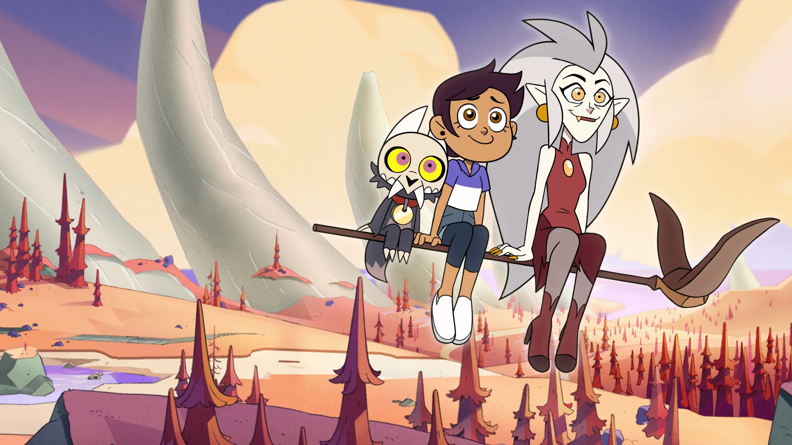

Vítejte na mé fanouškovské stránce
Najdete zde všechny informace a novinky o seriálu The Owl House.

O čem seriál je
Příběh sleduje Luz Noceda, nápaditou a trochu nepochopenou lidskou dívku, která náhodou objeví portál do jiné dimenze. Ocitne se na Vroucích ostrovech (Boiling Isles) – magickém světě plném démonů, čarodějnic a podivných tvorů.
Nestačí jí být jen pozorovatelkou, a tak se stane učednicí rebelující čarodějnice Edy Clawthorne (přezdívané „Soví dáma“) a spřátelí se s roztomilým, ale po mocenském trůnu toužícím démonem Kingem. Přestože Luz nemá přirozené magické schopnosti, najde si vlastní způsob, jak kouzlit, a postupně objevuje přátelství, tajomství tohoto magického světa i nebezpečí, které mu hrozí.